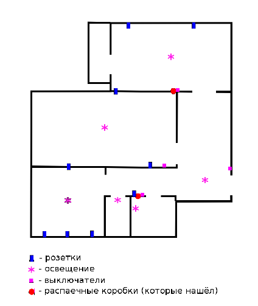
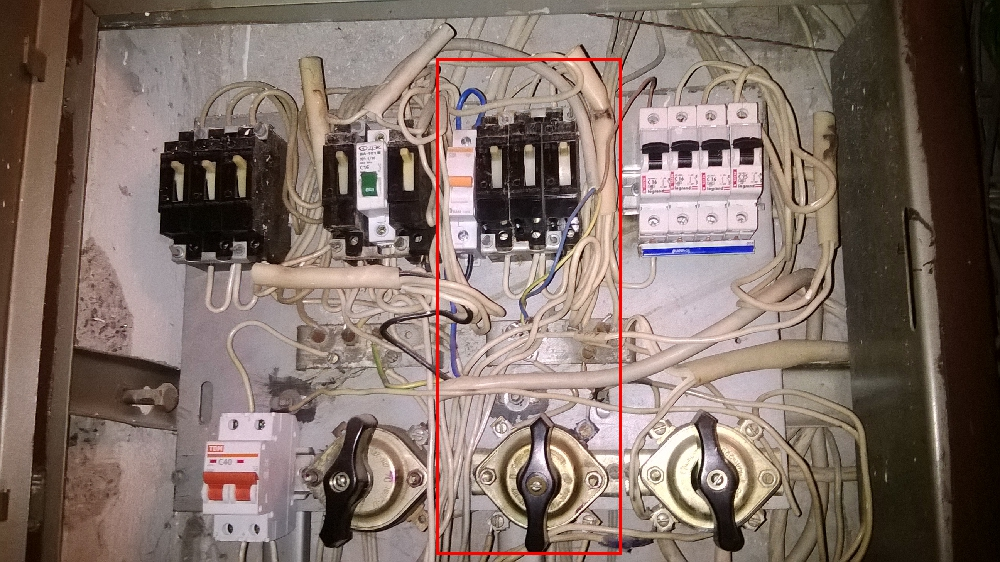

Проблемы с электричеством
Дано
Двухкомнатная квартира, соответственно две комнаты, кухня, ванная и туалет. План квартиры как есть сейчас: 
Все розетки в квартире подключены шлейфом. Т.е. одну откручиваешь, и остальные больше не питаются.
Все розетки подключены через один автомат
В эти розетки, понятное дело, подключаются все электроприборы квартиры: Электрочайник, холодильник, микроволновка, компьютеры, зимой обогреватели
Этажный щиток в состоянии - не подходи УБЪЁТ!
{kind=link}
Картинка кликабельна, красным обведены наши автоматы: 
{kind=link}
Основная проблема
Периодически отгорают провода в розетках, т.к. нагрузка слишком большая и слишком много плохих контактов по пути.
Чего хотелось бы сделать:
- Подключить розетки в каждой комнате через отдельный автомат, или хотябы кухню повесить на отдельный автомат
- Ремонт в комнатах уже сделан (про хитрость с розетками, я узнал в самом конце) и хотелось бы обойтись без глобального слома всего (если вдруг это окажется возможным)
- Провести нормальный провод для стиральной машины (сейчас запитана от розетки электроплиты, через её же автомат)
- Ещё что-то необходимое, в чём убедит электрик :)